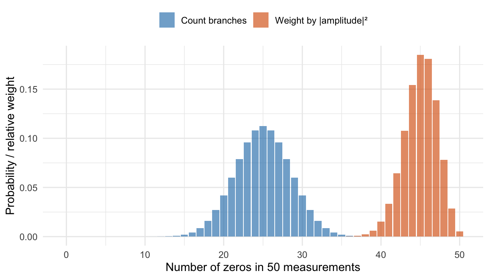

Hugh Everett’s relative-state idea, decoherence, and the problem of probability
A worked introduction to the many-worlds interpretation of quantum mechanics: Hugh Everett’s life and the 1957 relative-state formulation, entanglement and decoherence computed explicitly, the Born-rule counting problem, today’s leading advocates, and how it differs from the multiverse of Martin Rees.
cosmology
quantum-mechanics
history-of-science
Author
Paul Milne
Published
October 18, 2026
When people say “the multiverse” they can mean two quite different things. One is cosmological: the idea, which Martin Rees takes seriously in the six-numbers post, that there may be many regions or universes with different values of constants such as \(N\), \(\varepsilon\) and \(Q\). The other comes from quantum mechanics: the many-worlds interpretation (MWI), which holds that the equations of quantum theory describe reality exactly as written, with no collapse, so that every possible outcome of a quantum measurement really occurs, each in its own branch of one enormous wave function.
This post is about the second. It covers who proposed it and why, the mathematics that makes it hang together (entanglement and decoherence, computed explicitly), the difficulty of recovering probabilities, who defends the idea today, and how it relates to the cosmological multiverse.
The problem Everett was trying to solve
Quantum mechanics has two rules for how a state changes. Between measurements, the state evolves smoothly and deterministically under the Schrödinger equation, \(i\hbar\,\partial_t|\psi\rangle = \hat H|\psi\rangle\). At a measurement, the textbook (Copenhagen) account adds a second rule: the state collapses at random to one of the possible outcomes, with probability given by the Born rule, \(p_i = |\langle i|\psi\rangle|^2\).
The trouble is that the second rule never says what counts as a “measurement”. A measuring device is made of atoms that themselves obey quantum mechanics, so why should a detector, a physicist, or a cat be exempt from the smooth evolution? Schrödinger’s cat (1935) and Wigner’s friend (1961) were designed to expose exactly this tension.
Everett’s answer was radical in its simplicity: drop the second rule. Keep only the Schrödinger equation, apply it to everything including the observer, and see what it predicts.
Hugh Everett III
Hugh Everett III (1930–1982) was born in Washington, D.C., and studied chemical engineering at the Catholic University of America before moving to Princeton in 1953, where he turned to mathematics and physics. At Princeton he studied under John Archibald Wheeler, who had earlier supervised Richard Feynman and later coined the terms “black hole” and “wormhole”. Everett’s 1957 PhD thesis, originally titled “Wave Mechanics Without Probability” and later shortened to “On the Foundations of Quantum Mechanics”, is the founding document of the interpretation. A condensed version appeared the same year in Reviews of Modern Physics as “‘Relative State’ Formulation of Quantum Mechanics”, with a supportive note from Wheeler.
The reception was cool. In 1959 Everett travelled to Copenhagen to present the idea to Niels Bohr and his circle. The meeting went badly: Bohr’s school saw the idea as missing the point, and Everett came away discouraged. By then he had already begun a second career. He worked from 1956 for the Pentagon’s Weapons Systems Evaluation Group on nuclear-war modelling, and later at defence-analysis firms he co-founded, where he did influential work on optimisation (a generalised Lagrange-multiplier method) and on military operations research. He never held a physics professorship, and published almost nothing more on quantum foundations.
Everett did not use the phrase “many worlds”. It was Bryce DeWitt, who admired the idea and championed it, who popularised the name in a 1970 Physics Today article, and who with Neill Graham edited the 1973 collection The Many-Worlds Interpretation of Quantum Mechanics, which finally printed Everett’s long thesis. Everett died of a heart attack in 1982, aged 51, after years of heavy smoking and drinking. His son, the musician Mark Oliver Everett of the band Eels, made a 2007 BBC documentary about his father, Parallel Worlds, Parallel Lives. Everett’s theory was only taken seriously after his death.
The mathematics: how branches appear
Measurement as entanglement
Take a system qubit in the state \(|\psi\rangle = c_0|0\rangle + c_1|1\rangle\) and a measuring device that starts in a “ready” state \(|R\rangle\). A good measurement is just an interaction that correlates the device with the system:
The result is an entangled state. There’s no collapse here, just linear evolution. If the device is an observer, the right-hand side contains one term where the observer saw 0 and one where they saw 1. Each term is a self-consistent “world” in which the observer remembers a definite result. Everett called each term’s observer state relative to the system state, hence “relative-state formulation”.
We can check numerically that this entangled state is genuinely not a product state. Its entanglement entropy vanishes only for a product state:
entropy_bits <-function(p) { p <- p[p >1e-12]; -sum(p *log2(p)) }c0 <-sqrt(0.9); c1 <-sqrt(0.1)# State of (system, device) as a 2x2 matrix Psi[system, device]Psi <-matrix(c(c0, 0, 0, c1), 2, 2) # c0|0>|D0> + c1|1>|D1>schmidt <-svd(Psi)$d^2# squared Schmidt coefficientsc(schmidt_weights = schmidt, entanglement_entropy_bits =entropy_bits(schmidt))
The two Schmidt weights are 0.9 and 0.1, and the entropy is about 0.469 bits. A product state would have a single weight of 1 and zero entropy.
Why branches don’t interfere: decoherence
If the post-measurement state is just a quantum superposition, why can’t we see interference between the two terms, as we do in the double-slit experiment? The answer, developed from the 1970s by H. Dieter Zeh, Wojciech Zurek and others, is decoherence: the branches become entangled with the enormous number of microscopic degrees of freedom in their surroundings, and this makes interference between them unobservable in practice.
Here is a minimal model. Our system qubit interacts with \(N\) environment qubits, each initially \(|0\rangle\). If the system is \(|0\rangle\), the environment is untouched. If it is \(|1\rangle\), each environment qubit is rotated into \(|e_1\rangle = \cos\theta\,|0\rangle + \sin\theta\,|1\rangle\). The joint state is
Tracing out the environment gives the system’s reduced density matrix. Its diagonal entries are \(|c_0|^2\) and \(|c_1|^2\), unchanged, but the off-diagonal “coherence” term that controls interference is
Each extra environment qubit multiplies the coherence by \(\cos\theta < 1\), so it decays exponentially with environment size. I’ll verify this formula by building the full \(2^{N+1}\)-dimensional state vector explicitly and tracing out the environment numerically:
env_state <-function(N, theta) { e1 <-c(cos(theta), sin(theta)) v <-1for (k inseq_len(N)) v <-kronecker(v, e1) v}zero_env <-function(N) { v <-rep(0, 2^N); v[1] <-1; v }coherence_numeric <-function(N, theta, c0, c1) {# joint state as a matrix: rows = system (0,1), columns = environment basis Psi <-rbind(c0 *zero_env(N), c1 *env_state(N, theta)) rho <- Psi %*%t(Psi) # trace over environment (real amplitudes)abs(rho[1, 2])}theta <-0.5chk <-tibble(N =0:10) |>mutate(numeric =sapply(N, coherence_numeric, theta = theta, c0 = c0, c1 = c1),analytic = c0 * c1 *cos(theta)^N )chk |>mutate(across(c(numeric, analytic), ~round(.x, 5))) |>slice(c(1, 2, 3, 6, 11))
The brute-force trace and the closed form agree to machine precision (maximum difference 2.8e-17). Even with only 10 environment qubits, the coherence has dropped to 27.1% of its initial value. Real environments contain something like \(10^{20}\) or more degrees of freedom:
Figure 1: Coherence between the two branches, relative to its starting value, as the number of environment qubits grows. Lines: analytic result (cos θ)^N for three coupling strengths. Points: brute-force numerical trace for N ≤ 10 (θ = 0.5). Decoherence is exponential in environment size.
This is the mechanism that makes the branches effectively independent. Once the off-diagonal terms are negligible, nothing that happens in one branch can be detected from another, and each branch evolves as though the others did not exist. This is what Everettians mean by saying the “worlds” are real but emergent: they are not added to the theory, they are patterns in the wave function that decoherence makes robust.
One common objection is that branching must violate energy conservation. It does not: the total state remains normalised, \(\sum_i|c_i|^2 = 1\), and each branch carries only its share. Branching does not copy the universe; it describes how a single wave function organises itself.
The hard part: where do the probabilities come from?
If every outcome occurs, what does it mean to say that outcome 0 has probability 0.9? A tempting answer is to count branches. After a single measurement there are two branches, so each has “probability 1/2” regardless of the amplitudes. That gives the wrong answer.
The problem is sharper with repeated measurements. Prepare \(n\) copies of \(\sqrt{0.9}|0\rangle+\sqrt{0.1}|1\rangle\) and measure them all. There are \(2^n\) branches, one for each sequence of results. Counting branches treats all sequences as equally likely, so the number of zeros would follow a Binomial\((n, 1/2)\) distribution. The Born rule instead gives each sequence with \(k\) zeros a weight \(0.9^k\,0.1^{n-k}\), so the total weight of branches with \(k\) zeros is Binomial\((n, 0.9)\).
n <-50bc <-tibble(k =0:n,`Count branches`=dbinom(k, n, 0.5),`Weight by |amplitude|²`=dbinom(k, n, 0.9)) |> tidyr::pivot_longer(-k, names_to ="rule", values_to ="p")ggplot(bc, aes(k, p, fill = rule)) +geom_col(position ="identity", alpha =0.65) +scale_fill_manual(values =c("#2c7fb8", "#d95f0e")) +labs(x ="Number of zeros in 50 measurements", y ="Probability / relative weight", fill =NULL) +theme(legend.position ="top")

Figure 2: Distribution of the number of zeros after measuring n = 50 identically prepared qubits with |c0|² = 0.9. Counting branches (blue) predicts about half zeros; weighting each branch by |amplitude|² (orange) gives the observed 90%.
Experiments see frequencies near 90% zeros, so the amplitude-squared weighting is the one that matches experience. The question is why that weighting, rather than branch-counting, should govern what an observer expects.
Everett’s own argument was a law-of-large-numbers result. Measure the weight (squared norm) of the branches whose relative frequency of zeros deviates from 0.9 by more than 0.05. That weight goes to zero as \(n\) grows, so the branches that carry almost all the weight are those in which the observed frequencies match the Born rule:
ns <-c(10, 25, 50, 100, 250, 500, 1000)atypical <-sapply(ns, function(n) { k <-0:nsum(dbinom(k, n, 0.9)[abs(k / n -0.9) >0.05])})tibble(n = ns, weight_of_atypical_branches =round(atypical, 5))
By \(n = 1000\) the atypical branches carry a negligible weight. But critics, notably Adrian Kent, point out that this is circular: it assumes the squared-amplitude weighting is the right measure of “how much a branch matters” and then derives that observers will see Born frequencies. It does not independently justify the weighting.
The modern responses are:
Decision theory (Deutsch 1999, Wallace 2012). Show that a rational agent who accepts Everettian quantum mechanics and some plausible rationality axioms must bet as if branch probabilities equal \(|c_i|^2\).
Self-locating uncertainty (Sebens and Carroll 2018). Before learning which branch you are in, you have uncertainty about where you are, and symmetry arguments fix that uncertainty to the Born weights. This links to ordinary Bayesian reasoning, like the posterior calculations in the prosecutor’s fallacy post: the question is not “what will happen?” but “given everything I know, which of the observers that match my evidence am I?”.
Objective-weights or “measure” proposals. Treat \(|c_i|^2\) as a basic feature of the world, akin to a mass, not a probability to be derived.
Whether any of these succeeds is a matter of live disagreement. It remains the main technical objection to the interpretation.
Who defends it today?
The interpretation was a fringe position for decades, but has found serious advocates:
David Deutsch (Oxford) is the most committed champion. He argues that the interpretation is demanded by quantum computing, since the computation seems to need explaining by many parallel computational histories, and made the case in The Fabric of Reality (1997). His 1999 decision-theoretic derivation of the Born rule started the modern probability debate.
David Wallace (philosopher of physics, now at the University of Pittsburgh) gave the most careful defence in The Emergent Multiverse (2012), which treats branches as emergent, decoherence-defined structures and develops the decision-theoretic argument.
Sean Carroll (Johns Hopkins and the Santa Fe Institute) brought the view to a wide readership in Something Deeply Hidden (2019) and, with Charles Sebens, developed the self-locating-uncertainty approach.
Simon Saunders (Oxford) has contributed foundational work on branching and probability, and Lev Vaidman (Tel Aviv) is another long-standing advocate, and the author of the standard encyclopedia entry on the topic.
Max Tegmark (MIT) treats many-worlds as one level of a hierarchy of multiverses (below), and has argued that the interpretation follows naturally from taking the Schrödinger equation seriously.
Wojciech Zurek and H. Dieter Zeh built the decoherence framework that makes the interpretation precise, although neither is a straightforward Everettian.
It remains a minority view. A 2013 survey of conference participants by Schlosshauer, Kofler and Zeilinger found roughly 42% favouring Copenhagen-style views and about 18% favouring Everett, with the rest split among other approaches. The main rivals each have prominent supporters and each has costs:
Collapse theories (GRW, Penrose) modify the dynamics, adding a physical collapse mechanism, with testable differences.
Pilot-wave (Bohmian) mechanics adds definite particle positions guided by the wave function, at the cost of non-locality.
QBism and relational views treat the quantum state as an agent’s information, not a feature of the world.
Critics such as Tim Maudlin, David Albert and Adrian Kent press the probability problem and ask whether “worlds” are well defined.
How it connects to cosmology
It is not the same as Rees’s multiverse. Tegmark organises the possibilities into levels:
Level
What exists
Source
I
Regions beyond our cosmic horizon, same laws and constants
Infinite or very large space
II
Other “bubble” universes with different constants and perhaps different physics
Eternal inflation, string landscape
III
Branches of the quantum wave function
Everett’s many-worlds
IV
All mathematically consistent structures
Mathematical universe hypothesis
The multiverse that bears on the six numbers is Level II: different regions can have different \(N\), \(\varepsilon\), \(Q\) and \(\lambda\), so an anthropic selection effect can explain why we see values that permit observers. That is the argument Carr and Rees made in 1979, and it is the cosmological version of the carbon-resonance reasoning behind the Hoyle state.
Level III does not do that job. Every Everettian branch obeys the same Schrödinger equation with the same constants. Many-worlds therefore gives no anthropic explanation for why \(N \approx 10^{36}\) or why \(\varepsilon\approx0.007\). The two ideas are logically independent: one can accept either, both or neither. Deutsch and Tegmark have argued that if you believe in an inflating universe, the two views end up looking more alike.
A place where they meet: the origin of structure. The amplitude \(Q\approx10^{-5}\) of primordial density fluctuations is, in the inflationary picture, set by quantum fluctuations that were stretched to cosmic size. On the Everettian reading, the specific pattern of hot and cold spots in the microwave background is one of an enormous number of branches, each with a different realisation of the same statistics. The galaxies in our branch sit where they do because of one such history; our measured \(Q\) describes the statistics that all branches share.
Probability again. Questions like “which observers am I?” echo the counting problems in the birthday paradox post, where the right answer came from counting the right things (pairs, not people). Here the analogous question, what to count and how to weight it, is exactly what the Born-rule debate is about.
Takeaways
Everett (1957) removed the collapse postulate and kept only unitary evolution; measurement becomes entanglement, and each outcome corresponds to a branch.
Decoherence explains why branches don’t interfere: coherence falls as \((\cos\theta)^N\) with environment size, as the numerical check shows.
The unresolved issue is probability. Counting branches gives the wrong answer; the Born weights come from decision theory, self-locating arguments or a postulate, and critics contest each.
Many-worlds is not the cosmological multiverse. It does not explain fine-tuned constants, which belong to Level II arguments of the kind Rees discusses.
It remains a minority but serious position, with prominent defenders such as Deutsch, Wallace, Carroll, Saunders, Vaidman and Tegmark.
References
Everett, H. (1957). “Relative state” formulation of quantum mechanics. Reviews of Modern Physics 29, 454.
DeWitt, B. S. (1970). Quantum mechanics and reality. Physics Today 23(9), 30.
DeWitt, B. S., & Graham, N. (eds.) (1973). The Many-Worlds Interpretation of Quantum Mechanics. Princeton University Press.
Zeh, H. D. (1970). On the interpretation of measurement in quantum theory. Foundations of Physics 1, 69.
Zurek, W. H. (2003). Decoherence, einselection, and the quantum origins of the classical. Reviews of Modern Physics 75, 715.
Deutsch, D. (1985). Quantum theory, the Church–Turing principle and the universal quantum computer. Proceedings of the Royal Society A 400, 97.
Deutsch, D. (1997). The Fabric of Reality. Allen Lane.
Deutsch, D. (1999). Quantum theory of probability and decisions. Proceedings of the Royal Society A 455, 3129.
Wallace, D. (2012). The Emergent Multiverse. Oxford University Press.
Sebens, C. T., & Carroll, S. M. (2018). Self-locating uncertainty and the origin of probability in Everettian quantum mechanics. British Journal for the Philosophy of Science 69, 25.
Carroll, S. (2019). Something Deeply Hidden. Dutton.
Tegmark, M. (2003). Parallel universes. In J. D. Barrow et al. (eds.), Science and Ultimate Reality. Cambridge University Press.
Schlosshauer, M., Kofler, J., & Zeilinger, A. (2013). A snapshot of foundational attitudes toward quantum mechanics. Studies in History and Philosophy of Modern Physics 44, 222.
Vaidman, L. Many-worlds interpretation of quantum mechanics. Stanford Encyclopedia of Philosophy.
Carr, B. J., & Rees, M. J. (1979). The anthropic principle and the structure of the physical world. Nature 278, 605.